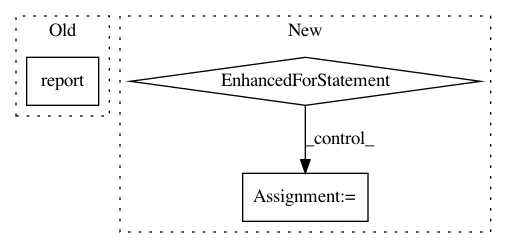

b71c912da70e307ff1a9f07c7ca277a727306126,python/ray/tune/examples/mlflow_example.py,,easy_objective,#Any#,18
Before Change
result = dict(
timesteps_total=i,
mean_loss=(config["height"] - 14)**2 - abs(config["width"] - 3))
tune.report(**result)
time.sleep(0.02)
if __name__ == "__main__":
After Change
// Hyperparameters
width, height = config["width"], config["height"]
for step in range(config.get("steps", 100)):
// Iterative training function - can be any arbitrary training procedure
intermediate_score = evaluation_fn(step, width, height)
// Feed the score back back to Tune.
tune.report(iterations=step, mean_loss=intermediate_score)
time.sleep(0.1)
if __name__ == "__main__":
client = MlflowClient()
experiment_id = client.create_experiment("test")
In pattern: SUPERPATTERN
Frequency: 3
Non-data size: 3
Instances
Project Name: ray-project/ray
Commit Name: b71c912da70e307ff1a9f07c7ca277a727306126
Time: 2020-07-05
Author: rliaw@berkeley.edu
File Name: python/ray/tune/examples/mlflow_example.py
Class Name:
Method Name: easy_objective
Project Name: chainer/chainercv
Commit Name: 1b0348a9b65fabfb5d45534cfde25c504890a56f
Time: 2017-06-06
Author: yuyuniitani@gmail.com
File Name: chainercv/extensions/semantic_segmentation/semantic_segmentation_evaluator.py
Class Name: SemanticSegmentationEvaluator
Method Name: evaluate
Project Name: chainer/chainercv
Commit Name: e69a1bf7a20467b10c096547e97923842ae71937
Time: 2017-06-02
Author: Hakuyume@users.noreply.github.com
File Name: chainercv/extensions/detection/detection_voc_ap_evaluator.py
Class Name: DetectionVOCAPEvaluator
Method Name: evaluate